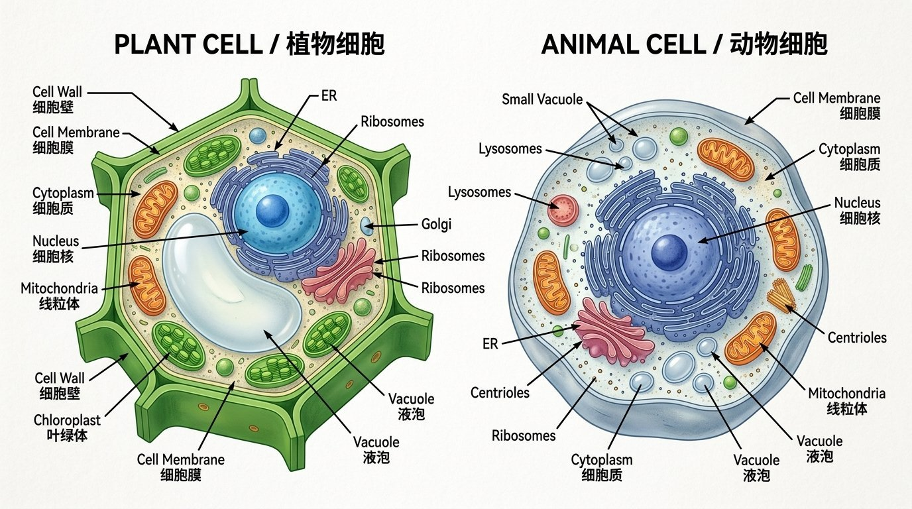
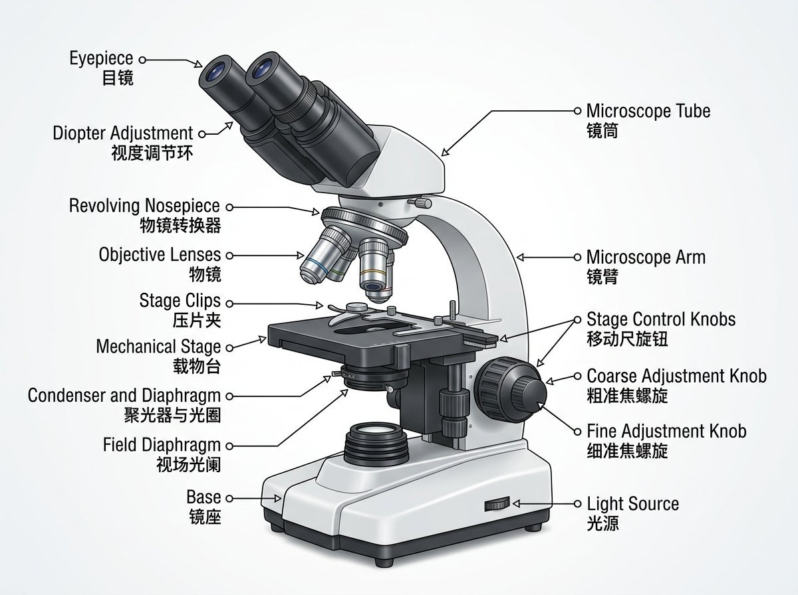
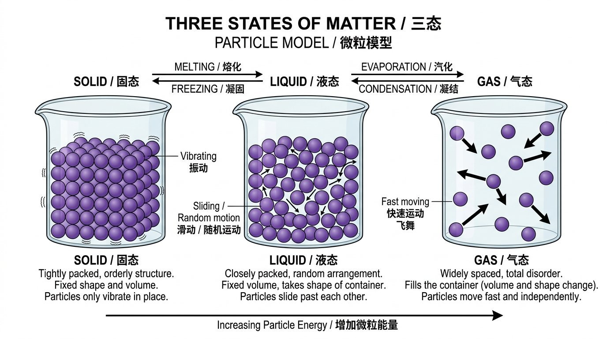
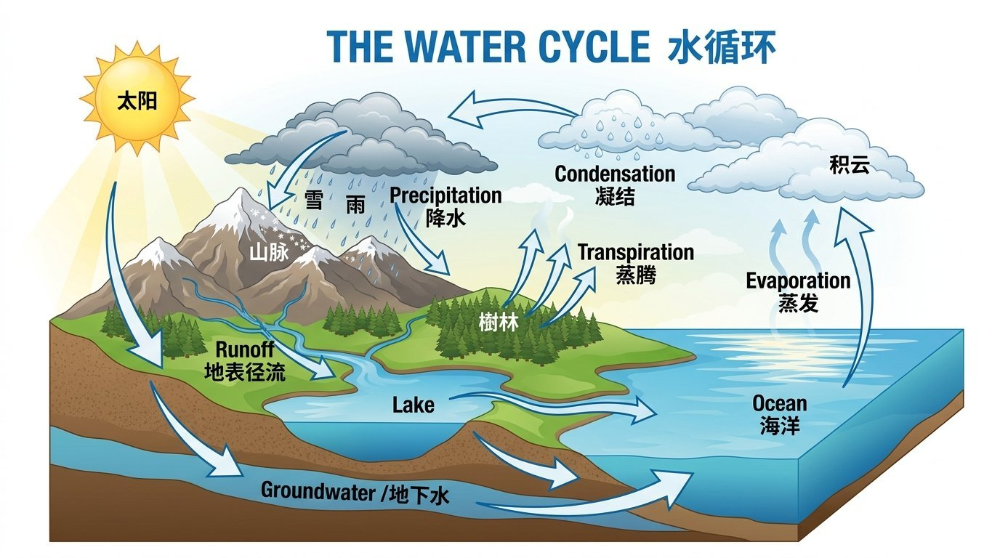
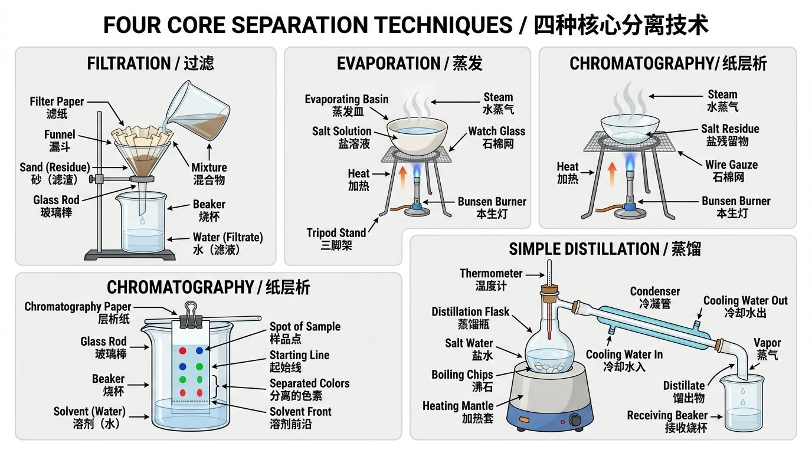
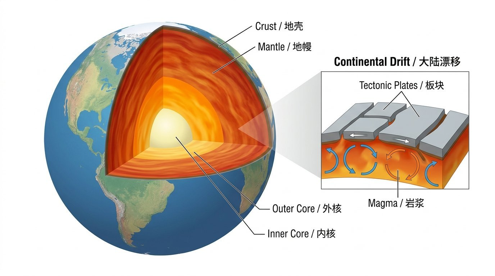
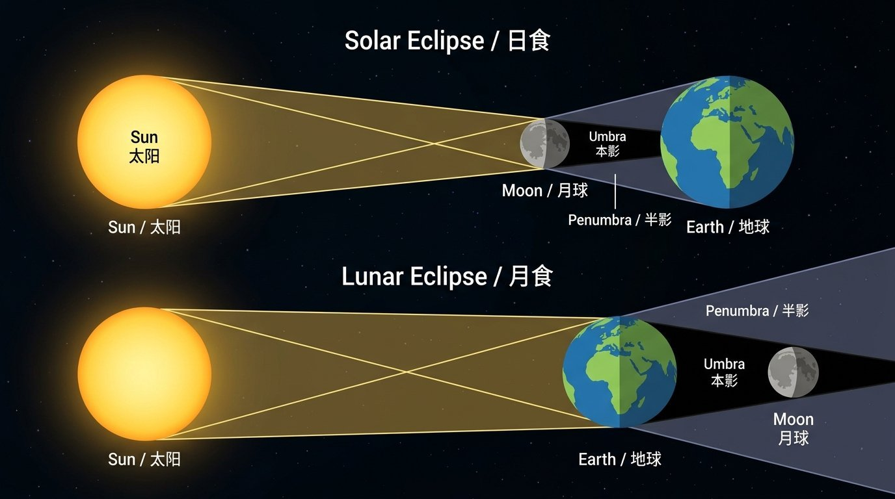
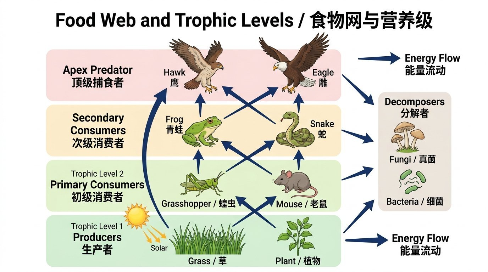
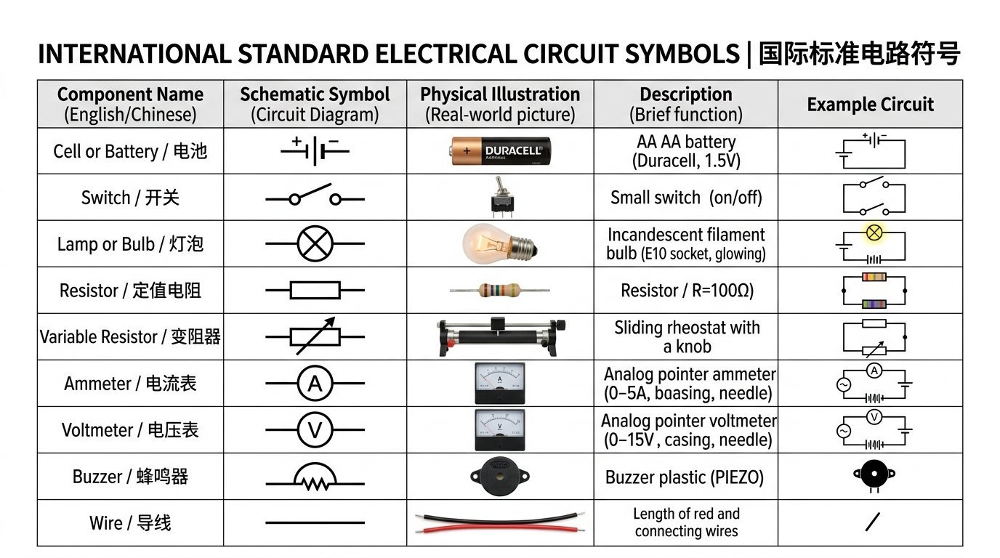

💡 学习小提示： 全部知识点已精细拆分为易背诵核心短句！点击每个短句右侧的 🔊 朗读短句 可听纯正发音；鼠标轻点任意英文单词可查看音标、中文与官方释义。
Cambridge Lower Secondary Science Stage 7
COMPREHENSIVE EXAM REVISION HANDBOOK & VOCABULARY GUIDE
剑桥初中科学 7 年级全图解深度双语精讲手册（核心短句易记版 + 智能点读系统）
目录索引 / TABLE OF CONTENTS (9 UNITS + APPENDIX)
⏱️ 上次学到
UNIT 1 • 动植物细胞与显微镜 (Cells)
点击直接进入上次学习进度
📖 选择学习单元 (单单元精读模式，避免页面过长)
Unit 1 • 细胞生物学
动植物细胞、显微镜操作、特化细胞
Unit 2 • 物质状态与微粒
物态模型、热膨胀、全球水循环
Unit 3 • 力学基础与运动
摩擦力、质量与重力、海洋潮汐
Unit 4 • 生物特征与分类
MRS GREN、生物五界、二歧分类检索表
Unit 5 • 材料性质与分离
金属合金、四大分离实验装置
Unit 6 • 地球圈层、声与光
地球内部结构、声波频率、日食月食
Unit 7 • 微生物与食物网
分解者、营养级、能量金字塔与流动
Unit 8 • 化学变化与检验
化学反应特征、酸碱中和、三大气体检验
Unit 9 • 电路电学基础
电路符号、串联定量规律、电阻与电流表
附录 • 科学探究与实验变量
自变量/因变量/控制变量、异常值分析
Unit 1: Cells 细胞学与显微镜BIOLOGY 生物
Unit 2: Materials & Structure 物质微观结构CHEMISTRY 化学
Unit 3: Forces & Energy 力学与能量转换PHYSICS 物理
Unit 4: Grouping Organisms 生物分类与检索表BIOLOGY 生物
Unit 5: Properties of Materials 材料性质与分离CHEMISTRY 化学
Unit 6: Earth Physics 地球物理与声光现象PHYSICS / EARTH 地理
Unit 7: Microorganisms 环境微生物与分解BIOLOGY 生物
Unit 8: Changes to Materials 反应与气体检验CHEMISTRY 化学
Unit 9: Electricity 电流与串联电路定律PHYSICS 物理
Appendix: Scientific Enquiry 科学探究考点EXAM SKILLS 技能
1. 核心考点速记短句群 (Bite-sized Core Facts)
1.1 动植物细胞基础与共有结构 (Cell Basics & Shared Structures)

🔍 真实高清图解 · 点击图片可全屏放大查看详细中英双语标注
Figure 1.1: Comparison of Plant Cell (with wall, vacuole & chloroplasts) and Animal Cell
General Cell Principles (细胞通性)
-
1
All living organisms are made of cells.
所有生物体都由细胞构成。
-
2
Cells are the microscopic building blocks of life.
细胞是构成生命的基本微观单位。
-
3
New cells are produced by cell division.
新细胞由已有细胞分裂产生。
-
4
Most cells are too small to see with the naked eye.
大多数细胞太小，肉眼无法直接看见。
Cell Membrane (细胞膜 - 动植物共有)
-
1
The cell membrane is a flexible outer skin.
细胞膜是细胞柔软的外层表皮。
-
2
It is partially permeable.
它具有半透性（选择透过性）。
-
3
It controls what enters and leaves the cell.
它控制进出细胞的物质。
-
4
It lets in oxygen, water, and glucose.
它允许氧气、水和葡萄糖进入。
-
5
It lets out carbon dioxide and waste products.
它排出二氧化碳和代谢废物。
Cytoplasm & Nucleus (细胞质与细胞核 - 动植物共有)
-
1
Cytoplasm is a clear jelly inside the cell.
细胞质是细胞内部透明的胶状物质。
-
2
Most chemical metabolic reactions happen in cytoplasm.
绝大多数细胞代谢化学反应在细胞质中进行。
-
3
The nucleus contains genetic material called DNA.
细胞核含有被称为 DNA 的遗传物质。
-
4
The nucleus controls all activities of the cell.
细胞核控制细胞的所有生命活动。
-
5
It directs cell growth and cell division.
它指挥细胞生长和分裂。
Mitochondria (线粒体 - 能量工厂 - 动植物共有)
-
1
Mitochondria are tiny rod-shaped organelles.
线粒体是微小的杆状细胞器。
-
2
Aerobic cellular respiration happens inside mitochondria.
有氧呼吸在线粒体内部进行。
-
3
They release energy from glucose using oxygen.
它们利用氧气分解葡萄糖释放能量。
-
4
Active cells like muscle cells have many mitochondria.
肌肉等活跃细胞含有极多线粒体。
1.2 植物细胞特有结构 (Unique Plant Cell Structures)
Plant-Only Organelles (植物特有的三大结构)
-
1
Plant cells have three extra structures.
植物细胞具有三种额外的专属结构。
-
2
The cell wall is a rigid outer layer made of cellulose.
细胞壁是由纤维素构成的坚硬外层。
-
3
The cell wall supports and protects the plant cell.
细胞壁支撑并保护植物细胞。
-
4
The cell wall is fully permeable to water and dissolved substances.
细胞壁是完全全透的，水和溶质可自由通过。
-
5
Chloroplasts contain a green pigment called chlorophyll.
叶绿体含有名为叶绿素的绿色色素。
-
6
Chloroplasts absorb sunlight energy for photosynthesis.
叶绿体吸收太阳光能进行光合作用。
-
7
Root cells grow underground and do NOT have chloroplasts.
植物根部细胞生长在地下，绝不含叶绿体。
-
8
The large permanent vacuole contains watery cell sap.
中央大液泡充满水状的细胞液。
-
9
Cell sap stores water, sugars, and mineral salts.
细胞液储存水分、糖分和矿物盐。
-
10
The swollen vacuole pushes outwards to keep plant cells firm (turgid).
膨胀的液泡向外推挤，使植物细胞保持坚挺。
1.3 光学显微镜操作规范与故障排查 (Microscope Protocol & Troubleshooting)

🔍 真实高清图解 · 点击图片可全屏放大查看详细中英双语标注
Figure 1.2: Essential Parts of the Compound Light Microscope (光学显微镜主要部件)
5-Step Focusing Protocol (规范调焦五步法)
-
1
Step 1: Place the glass slide securely on the stage.
第1步：将载玻片平稳固定在载物台上。
-
2
Step 2: Always start with the lowest power objective lens.
第2步：始终先用最低倍物镜（视野最宽最亮）。
-
3
Step 3: Look from the side to lower the lens close to the slide.
第3步：从侧面注视，向下调粗准焦螺旋使物镜靠近玻片。
-
4
Step 4: Look into the eyepiece and turn the coarse focus knob.
第4步：正视目镜，反向旋转粗准焦螺旋找到物像。
-
5
Step 5: Turn the fine focus knob for sharp clarity.
第5步：微调细准焦螺旋直至图像边缘极其锐利。
Workbook Troubleshooting: Why Zara Cannot See Cells (扎拉看不见细胞的原因)
-
1
Reason 1: The specimen is not centered over the light hole.
原因1：玻片上的标本未对准载物台中心的通光孔。
-
2
Reason 2: The objective lens did not click into correct position.
原因2：物镜转换器未旋转卡紧到位。
-
3
Reason 3: The mirror or lamp is not directing light into the microscope.
原因3：反光镜或光源未对准，光线未射入显微镜。
-
4
Reason 4: The focus knobs were not adjusted to the focal plane.
原因4：准焦螺旋未调节至焦平面。
-
5
Reason 5: The tissue sample is too thick or unstained.
原因5：组织切片太厚透光不良，或未进行染色缺乏对比。
1.4 特化细胞与其适应性机能 (Specialised Cells & Adaptations)
Specialised Cells Summary (四种高频特化细胞)
-
1
Red blood cells have a biconcave disc shape.
红细胞呈双凹圆盘状。
-
2
This shape increases surface area to absorb oxygen quickly.
这种形状增大了表面积，便于快速吸收氧气。
-
3
Red blood cells contain haemoglobin to carry oxygen.
红细胞富含血红蛋白以结合运输氧气。
-
4
Mature red blood cells have no nucleus to pack more haemoglobin.
成熟红细胞无细胞核，以便装载更多血红蛋白。
-
5
Root hair cells have a long hair-like extension.
根毛细胞具有细长的毛状突起。
-
6
This long extension provides a large surface area for absorbing water.
细长突起提供了巨大的表面积以高效吸水。
-
7
Root hair cells have thin walls and NO chloroplasts.
根毛细胞壁薄，且不含任何叶绿体。
-
8
Ciliated cells have microscopic beating hairs called cilia.
纤毛细胞具有微小的节律性摆动毛状物（纤毛）。
-
9
Cilia sweep mucus and trapped dust away from lungs.
纤毛将粘液和灰尘病菌向外清扫远离肺部。
-
10
Stinging cells in Hydra fire sharp threads with toxins to catch prey.
水螅刺细胞在受刺激时弹出带毒刺丝麻痹捕食猎物。
Levels of Organisation (生命组织层级)
-
1
Level 1: Cells are the basic building units.
第1级：细胞是基本结构单元。
-
2
Level 2: Tissues are groups of similar specialised cells.
第2级：组织是由同类特化细胞组成的群体。
-
3
Level 3: Organs are made of different tissues working together.
第3级：器官是由多种不同组织联合构成的结构。
-
4
Level 4: Organ systems are groups of organs cooperating.
第4级：系统是由多个器官协调工作的系统。
-
5
Level 5: An organism is a complete living individual.
第5级：生物个体是由各系统组成的完整生命。
2. 课本真题演练与标准答案 (Exam Questions & Mark Scheme)
Question 1: Organelles in Plant vs Animal Cells (课本对比题)
Name two cell structures found in plant cells but NEVER in animal cells. For each, state its function.
【题目】列举两种仅存在于植物细胞而绝不存在于动物细胞的结构，并分别说明其生理功能。
Mark 1 Cell wall: Made of cellulose fibres to support and strengthen the cell.
【得分点1】细胞壁：由纤维素纤维构成，支撑并加固细胞。
Mark 2 Chloroplast: Contains chlorophyll to absorb light energy for photosynthesis.
【得分点2】叶绿体：含有叶绿素吸收光能进行光合作用。
Question 2: Root Hair Cell Adaptation (根毛细胞适应性)
Explain two ways the structure of a root hair cell is adapted to its function.
【题目】解释根毛细胞形态结构与其生理功能相适应的两个主要特征。
Mark 1 Long extension: Provides a large surface area to absorb water and minerals quickly.
【得分点1】细长突起：提供了巨大的表面积以快速吸收水分和矿物离子。
Mark 2 No chloroplasts: Roots are underground where there is no light for photosynthesis.
【得分点2】无叶绿体：根部位于地下无光照环境，无需进行光合作用。
3. 重点科学词汇表 (Unit 1 Vocabulary)
| Word 英文单词 | IPA 音标 | PoS | English Definition | 中文释义与考点 |
|---|
| Cell membrane | /ˈmembreɪn/ | n. | Partially permeable barrier controlling passage of molecules. | 细胞膜（控制物质进出） |
| Cell wall | /wɔːl/ | n. | Rigid outer layer made of cellulose supporting plant cells. | 细胞壁（纤维素构成，支撑固定） |
| Cytoplasm | /ˈsaɪtəʊplæzəm/ | n. | Jelly-like fluid where metabolic chemical reactions occur. | 细胞质（代谢化学反应场所） |
| Nucleus | /ˈnjuːkliəs/ | n. | Organelle containing chromosomes and genetic DNA. | 细胞核（控制中枢，含遗传物质） |
| Mitochondrion | /ˌmaɪtəʊˈkɒndriən/ | n. | Organelle for aerobic respiration to release energy. | 线粒体（呼吸氧化释放能量） |
| Chloroplast | /ˈklɔːrəplɑːst/ | n. | Plant organelle containing chlorophyll for photosynthesis. | 叶绿体（光合作用器官） |
| Chlorophyll | /ˈklɒrəfɪl/ | n. | Green pigment that absorbs sunlight energy. | 叶绿素（吸收光能的绿色色素） |
| Sap vacuole | /ˈvækjuəʊl/ | n. | Fluid-filled space storing cell sap to maintain firmness. | 液泡（存细胞液，维持膨压） |
| Haemoglobin | /ˌhiːməˈɡləʊbɪn/ | n. | Iron-rich protein in red blood cells that transports oxygen. | 血红蛋白（运输氧气的含铁蛋白质） |
| Specialised cell | /ˈspeʃəlaɪzd/ | n. | A cell adapted in structure to perform a specific function. | 特化细胞（形态结构特化适应功能） |
| Cilia | /ˈsɪliə/ | n. | Microscopic hairs beating rhythmically to clear airway mucus. | 纤毛（摆动清扫气道病菌灰尘） |
1. 核心考点速记短句群 (Bite-sized Core Facts)
2.1 微粒理论与物质三态模型 (Particle Theory & States of Matter)

🔍 真实高清图解 · 点击图片可全屏放大查看详细中英双语标注
Figure 2.1: Particle Arrangement in Solids, Liquids, and Gases (物质三态微粒排列模型)
Kinetic Particle Theory (微粒动力学理论)
-
1
All matter is made of tiny moving particles.
一切物质均由不断运动的微粒构成。
-
2
There are spaces between particles.
微粒与微粒之间存在间隙。
-
3
Particles have attractive forces between each other.
微粒之间存在相互吸引力。
-
4
Heating gives particles more kinetic energy.
加热使微粒获得更多动能。
-
5
Hot particles move or vibrate faster.
受热微粒运动或振动得更快。
Solid, Liquid & Gas Differences (三态排列对比)
-
1
Solid particles are packed tightly in a regular lattice.
固态微粒紧密排列在规则的晶格中。
-
2
Solid particles only vibrate around fixed positions.
固态微粒仅在固定位置附近振动。
-
3
Solids have a fixed shape and fixed volume.
固体具有固定的形状和体积。
-
4
Liquid particles are close together but randomly arranged.
液态微粒彼此贴近但排列杂乱。
-
5
Liquid particles can slide past each other.
液态微粒可以相互滑移流动。
-
6
Liquids have a fixed volume but take the shape of the container.
液体体积固定，但形状随容器而变。
-
7
Gas particles are far apart with huge spaces between them.
气态微粒相距很远，微粒间存在巨大空隙。
-
8
Gas particles move rapidly in random directions.
气态微粒高速向各个方向无规则运动。
-
9
Gases have no fixed shape and no fixed volume.
气体没有固定形状也没有固定体积。
-
10
Gases can be easily compressed because of large empty spaces.
因为微粒间隙巨大，气体极易被压缩。
The Powder Puzzle: Marcus's Flour Experiment (粉末状固体探究)
-
1
Flour behaves like a liquid because it pours easily.
面粉看似像液体一样容易倒出。
-
2
Flour takes the shape of the container bowl.
面粉会贴合碗底并呈现容器的形状。
-
3
However, flour is made of millions of tiny solid grains.
然而，面粉实际上是由数以百万计的微小固体颗粒构成的。
-
4
Individual grains slide past each other like liquid particles.
微小颗粒彼此相对滑移，表现得像液体。
-
5
Tapping the table vibrates flour grains closer together.
轻敲桌子使面粉颗粒震动并沉降得更紧密。
-
6
Tapping squeezes out the air spaces between grains.
敲击挤出了颗粒之间的空气空隙。
-
7
Each individual grain of flour remains a solid.
面粉的每个独立颗粒本身仍然是绝对的固体。
2.2 物态变化与微观机理 (Changes of State & Thermal Expansion)
State Changes (物态转化吸放热机理)
-
1
Melting: Solid changes to liquid when heated.
熔化：固体吸热转化为液体。
-
2
Heating makes particles vibrate fast enough to break fixed bonds.
加热使微粒振动加剧，克服固定晶格引力束缚。
-
3
Freezing: Liquid changes to solid when cooled.
凝固：液体冷却放热转化为固体。
-
4
Cooling removes energy so particles move slower.
降温释放热能，微粒运动减速。
-
5
Attractive forces pull slow particles into a fixed lattice.
分子间引力将减速的微粒拉紧锁定为固定晶格。
-
6
Boiling: Liquid changes rapidly to gas at a fixed temperature.
沸腾：液体在固定温度下剧烈转化为气体。
-
7
Evaporation: Liquid turns to gas at the surface at any temperature.
蒸发：液体在任何温度下均可在表面转化为气体。
-
8
Condensation: Gas cools down to form liquid droplets.
凝结：气体冷却转变为小液滴。
Thermal Expansion of Solids (铁棒受热膨胀真题机理)
-
1
Heating an iron bar makes it expand slightly.
加热铁棒会使其发生微小的膨胀。
-
2
Thermal energy makes iron particles vibrate more vigorously.
热能使铁原子振动得更加剧烈。
-
3
Vibrating particles push slightly further apart.
剧烈振动的微粒彼此推挤得稍远一些。
-
4
The iron particles themselves DO NOT expand or grow.
铁微粒本身的大小绝对不会膨胀变大！
-
5
Only the spaces between particles increase.
增大的仅仅是微粒与微粒之间的间隙。
2.3 自然界水循环 (The Water Cycle)

🔍 真实高清图解 · 点击图片可全屏放大查看详细中英双语标注
Figure 2.2: The Global Water Cycle Processes (水循环核心环节模式图)
Water Cycle Steps (水循环五大环节)
-
1
The Sun provides heat energy to drive the water cycle.
太阳提供热能驱动全球水循环。
-
2
Evaporation turns liquid water from oceans into water vapour.
蒸发作用将海洋液态水转化为水蒸气。
-
3
Transpiration releases water vapour from plant leaves.
蒸腾作用从植物叶片气孔散发水蒸气。
-
4
Warm water vapour rises and cools down in the sky.
温暖的水蒸气上升并在高空降温。
-
5
Condensation turns water vapour into tiny water droplets forming clouds.
凝结作用使水蒸气化为微小液滴聚集成云。
-
6
Precipitation falls as rain, snow, or hail.
降水过程以雨、雪或冰雹形式落向地面。
-
7
Runoff water flows in rivers back into oceans.
径流经由河流汇聚流回海洋。
Elements, Compounds & Mixtures (元素、化合物与混合物)
-
1
An element is made of only one type of atom.
元素是由单一类型原子构成的纯净物。
-
2
A compound is made of two or more elements chemically bonded.
化合物是由两种或多种元素通过化学键化合而成的。
-
3
A mixture contains substances that are NOT chemically combined.
混合物包含并未发生化学结合的多种物质。
-
4
Mixtures can be separated easily by physical methods.
混合物可以通过简单的物理方法进行分离。
-
5
Iron and sulfur mixed together can be separated with a magnet.
铁粉与硫粉仅混合时，可用磁铁直接吸出铁粉。
-
6
Heating iron and sulfur produces the compound iron sulfide (FeS).
加热铁与硫会生成化合物硫化铁（FeS）。
-
7
Iron sulfide is not magnetic and cannot be separated with a magnet.
硫化铁不具有铁磁性，不能用磁铁分离（化学变化）。
2. 重点科学词汇表 (Unit 2 Vocabulary)
| Word 英文单词 | IPA 音标 | PoS | English Definition | 中文释义与考点 |
|---|
| Particle model | /ˈpɑːtɪkl/ | n. | Scientific theory that all matter consists of moving spheres. | 微粒模型（万物由微粒构成） |
| Lattice | /ˈlætɪs/ | n. | Regular repeating pattern of particles in a solid. | 晶格（固体微粒规则排列网格） |
| Compressibility | /kəmˌpresəˈbɪləti/ | n. | The measure of how much a substance decreases in volume. | 压缩性（气体大，固液极小） |
| Thermal expansion | /ɪkˈspænʃn/ | n. | Increase in volume caused by particles vibrating further apart. | 热膨胀（间距微增，微粒本身不变） |
| Transpiration | /ˌtrænspəˈreɪʃn/ | n. | Loss of water vapour from plant leaves into the atmosphere. | 蒸腾作用（植物水分散失） |
| Precipitation | /prɪˌsɪpɪˈteɪʃn/ | n. | Rain, snow, sleet, or hail falling from clouds to Earth. | 降水（雨、雪、冰雹等降落形式） |
| Compound | /ˈkɒmpaʊnd/ | n. | Substance formed when two or more elements bond chemically. | 化合物（多种元素化学化合） |
| Mixture | /ˈmɪkstʃə/ | n. | Two or more substances mixed together without chemical bonds. | 混合物（无化学结合，易物理分离） |
1. 核心考点速记短句群 (Bite-sized Core Facts)
3.1 力的本质与接触/非接触力 (Types of Forces)
Force Fundamentals (力的概念与单位)
-
1
A force is a push or a pull.
力是一个推力或拉力。
-
2
Forces can change an object's speed.
力可以改变物体的速度。
-
3
Forces can change an object's direction of motion.
力可以改变物体的运动方向。
-
4
Forces can change an object's shape (deformation).
力可以改变物体的形状（形变）。
-
5
Force is measured in Newtons (symbol: N).
力的测量单位是牛顿（符号：N）。
-
6
A force meter (newton meter) measures forces.
弹簧测力计用于测量力的大小。
Contact vs Non-contact Forces (接触力 vs 非接触力)
-
1
Contact forces require physical touching between objects.
接触力要求物体之间发生实际的物理接触。
-
2
Friction is a contact force opposing sliding motion.
摩擦力是阻碍相对滑动运动的接触力。
-
3
Air resistance is friction between a moving object and air.
空气阻力是运动物体与空气之间的摩擦阻力。
-
4
Non-contact forces act across a distance without touching.
非接触力不需要接触即可远距离发挥作用。
-
5
Gravity is a non-contact force attracting masses.
重力是质量之间相互吸引的非接触力。
-
6
Magnetic force is a non-contact force between magnets.
磁力是磁体之间相互作用的非接触力。
-
7
Electrostatic force acts between electric charges.
静电力是电荷之间相互作用的非接触力。
3.2 质量与重力计算及太空运行 (Mass vs Weight & Space Flight)
Mass vs Weight (质量与重力的本质区别)
-
1
Mass is the amount of matter in an object.
质量是物体中所含物质的多少。
-
2
Mass is measured in kilograms (kg) or grams (g).
质量的单位是千克（kg）或克（g）。
-
3
Mass never changes wherever you go in the universe.
在宇宙中任何地点，物体的质量永不改变。
-
4
Weight is the gravitational force pulling on a mass.
重力是引力拉扯物体质量所产生的力。
-
5
Weight is measured in Newtons (N).
重力的测量单位是牛顿（N）。
-
6
Weight changes if gravitational field strength changes.
如果重力加速度变化，物体的重力就会改变。
-
7
Formula: Weight = mass × gravitational field strength (W = m × g).
计算公式：重力 = 质量 × 引力加速度（W = m × g）。
-
8
On Earth, gravity strength is approximately 9.8 N/kg (approx 10 N/kg).
在地球表面，引力加速度约为 9.8 N/kg（约 10 N/kg）。
-
9
On the Moon, gravity is only 1.6 N/kg (one-sixth of Earth).
在月球表面，引力仅为 1.6 N/kg（仅为地球的六分之一）。
Workbook Case: Space Probe Coasting (太空探测器滑行机理)
-
1
In deep space, there is a vacuum with no air.
在深空宇宙中是无空气的真空环境。
-
2
There is NO air resistance or friction in space.
太空环境中不存在任何空气阻力和摩擦力。
-
3
Once engines are turned off, the probe keeps moving.
一旦关闭推进火箭引擎，探测器仍会继续飞行。
-
4
It moves at a constant speed in a straight line forever.
它将永远保持匀速直线运动。
-
5
No thrust force is needed to maintain constant speed.
维持匀速直线运动不需要任何推力支撑！
3.3 天体引力与海洋潮汐 (Gravity & Ocean Tides)
Gravity & Tides (月球引力与地球潮汐)
-
1
The Sun's gravity keeps planets orbiting in ellipses.
太阳的巨大引力使各大行星保持椭圆轨道公转。
-
2
Earth's gravity pulls the Moon into orbit around Earth.
地球的引力捕获月球使其绕地球运行。
-
3
The Moon's gravity pulls on Earth's oceans.
月球的引力拉扯地球上的海洋海水。
-
4
This pull creates bulges of water called high tides.
引力拉扯形成海水隆起，形成涨潮（高潮）。
-
5
Most coastal places experience two high tides each day.
大多数沿海地区每天都会经历两次高潮和两次低潮。
Energy Stores and Conservation (能量形式与守恒定律)
-
1
Kinetic energy is stored in moving objects.
动能储存在运动的物体中。
-
2
Chemical energy is stored in food, batteries, and fuels.
化学能储存在食物、电池和燃料中。
-
3
Gravitational potential energy is stored in high objects.
重力势能储存在被举高的物体中。
-
4
Elastic potential energy is stored in stretched rubber bands.
弹性势能储存在被拉伸或压缩的弹簧橡皮筋中。
-
5
Thermal energy is stored in hot objects.
热能（内能）储存在温度高的物体中。
-
6
Energy cannot be created or destroyed.
能量既不能凭空创生，也不能凭空消灭。
-
7
Energy can only be transferred from one store to another.
能量只能从一种储存形式转移为另一种形式。
-
8
Wasted energy usually dissipates into surrounding air as heat.
损耗散失的能量通常以热能形式散逸到周围空气中。
2. 重点科学词汇表 (Unit 3 Vocabulary)
| Word 英文单词 | IPA 音标 | PoS | English Definition | 中文释义与考点 |
|---|
| Contact force | /ˈkɒntækt fɔːs/ | n. | Force between objects that physically touch each other. | 接触力（如摩擦力、弹力、推力） |
| Gravity | /ˈɡrævəti/ | n. | Attractive non-contact force between any two masses. | 重力/万有引力（非接触吸引力） |
| Friction | /ˈfrɪkʃn/ | n. | Contact force opposing motion between two sliding surfaces. | 摩擦力（阻碍相对运动的接触力） |
| Mass | /mæs/ | n. | Quantity of matter in an object, measured in kilograms (kg). | 质量（物质多少，宇宙处处恒定） |
| Weight | /weɪt/ | n. | Gravitational downward pull on a mass, measured in Newtons (N). | 重力（引力作用力，随星球而变） |
| Tide | /taɪd/ | n. | Periodic rise and fall of sea levels caused by Moon's gravity. | 潮汐（月球引力引起海水周期起伏） |
| Conservation of energy | /ˌkɒnsəˈveɪʃn/ | n. | Law stating energy cannot be created or destroyed. | 能量守恒定律（能量总量恒定不变） |
| Dissipate | /ˈdɪsɪpeɪt/ | v. | To spread out wastefully into surroundings as heat. | 耗散（无用能量散失为环境废热） |
1. 核心考点速记短句群 (Bite-sized Core Facts)
4.1 生命七大特征 (The Seven Life Processes: MRS GREN)
MRS GREN Memory Formula (生命七大特征口诀)
-
1
All living organisms carry out seven life processes.
所有活的生物体都必须具备七大生命活动。
-
2
Movement: Organisms change position or orientation.
运动（Movement）：生物体改变自身位置或身体朝向。
-
3
Respiration: Cells release energy from glucose.
呼吸（Respiration）：细胞从葡萄糖分解中释放生命能量。
-
4
Sensitivity: Organisms detect and respond to stimuli.
应激性/感应（Sensitivity）：探测环境刺激并做出反应。
-
5
Growth: Permanent increase in size and dry mass.
生长（Growth）：生物体体积和干重的不可逆增加。
-
6
Reproduction: Producing new offspring of the same species.
繁殖（Reproduction）：繁育同种后代以延续生命。
-
7
Excretion: Removing toxic chemical waste products from metabolism.
排泄（Excretion）：排除体内代谢产生的有毒化学废物。
-
8
Nutrition: Taking in food materials for growth and repair.
营养（Nutrition）：摄取养分供身体生长和修复所需。
Why Viruses Are Not Living Organisms (为什么病毒不是生物)
-
1
Viruses are NOT made of cells.
病毒不具有细胞结构（非细胞形态）。
-
2
Viruses have no cytoplasm and no cell membrane.
病毒没有细胞质，也没有细胞膜。
-
3
Viruses cannot respire or release energy.
病毒不能进行呼吸作用，也无法自主释放能量。
-
4
Viruses cannot feed or excrete waste.
病毒不能摄取营养，也不会排出代谢废物。
-
5
Viruses can only reproduce inside a host living cell.
病毒只有侵入宿主活细胞内部才能被动复制。
-
6
Therefore, scientists do not classify viruses as living organisms.
因此，科学界不将病毒视为真正意义上的生物体。
4.2 生物五界与物种概念 (The Five Kingdoms & Species)
The Five Kingdoms (生物分类五界系统)
-
1
Kingdom 1: Animals are multicellular and ingest food.
动物界：多细胞，摄取现成有机食物，无细胞壁。
-
2
Kingdom 2: Plants are multicellular and make food by photosynthesis.
植物界：多细胞，含纤维素细胞壁，行光合作用。
-
3
Kingdom 3: Fungi have cell walls made of chitin and absorb nutrients.
真菌界：含几丁质细胞壁，通过菌丝分解吸收养分。
-
4
Kingdom 4: Protoctists are mostly single-celled with a nucleus.
原生生物界：大多为单细胞微小生物，具有细胞核。
-
5
Kingdom 5: Prokaryotes (Bacteria) are microscopic cells without a nucleus.
原核生物界（细菌）：微小细胞，无成形细胞核。
Species Concept & The Sterile Mule Case (物种定义与骡子不育探究)
-
1
A species is a group of similar organisms.
物种是一群在形态和生理上高度相似的生物群体。
-
2
Members of a species can breed together to produce FERTILE offspring.
同种个体相互交配能产生具有生育能力的后代。
-
3
A female horse breeds with a male donkey to produce a mule.
母马与公驴交配繁育出的后代称为骡子（Mule）。
-
4
Mules are sterile and cannot have babies.
骡子是不可育的（没有生育繁殖能力）。
-
5
Because the offspring is infertile, horses and donkeys are DIFFERENT species.
因为繁殖出的后代不育，因此马和驴是两个不同的独立物种！
4.3 二歧分类检索表 (Dichotomous Keys)
Rules for Making Keys (编写二歧检索表三大铁律)
-
1
A dichotomous key divides organisms into two groups at each step.
二歧检索表在每一步中都将生物严格二分为两组。
-
2
Each question must have two contrasting choices (Yes/No).
每个判断节点必须给出两个非此即彼的对立选择。
-
3
Always use permanent, observable external features.
必须使用生物永久固定、肉眼可直接观察的外部特征。
-
4
Never use subjective words like 'big', 'small', or 'beautiful'.
严禁使用‘大’、‘小’、‘美丽’等主观模糊的词汇。
-
5
Branching keys show paths like a family tree.
分枝式检索表像家谱树一样直观分岔。
-
6
Paired-statement keys use numbered pairs of statements (1a, 1b).
配对语句式检索表采用编号成对陈述句进行跳转识别。
2. 重点科学词汇表 (Unit 4 Vocabulary)
| Word 英文单词 | IPA 音标 | PoS | English Definition | 中文释义与考点 |
|---|
| Excretion | /ɪkˈskriːʃn/ | n. | Removal of toxic waste products of metabolism. | 排泄（排出有毒代谢化学废物） |
| Sensitivity | /ˌsensəˈtɪvəti/ | n. | Ability to detect changes in environment and respond. | 应激性/感应（探测刺激并响应） |
| Species | /ˈspiːʃiːz/ | n. | Organisms able to interbreed to produce fertile offspring. | 物种（能交配产生可育后代群体） |
| Fertile | /ˈfɜːtaɪl/ | adj. | Capable of reproducing offspring. | 可育的（能够繁育后代的） |
| Sterile | /ˈstəraɪl/ | adj. | Incapable of producing offspring (infertile). | 不育的（如杂交骡子无法繁殖） |
| Dichotomous key | /daɪˈkɒtəməs kiː/ | n. | Identification tool dividing specimens into two pairs. | 二歧检索表（两分支识别工具） |
1. 核心考点速记短句群 (Bite-sized Core Facts)
5.1 金属与非金属物理性质对比 (Metals vs Non-Metals)
Physical Properties of Metals (金属物理性质五大特征)
-
1
Metals are good conductors of electricity.
金属是优良的电导体。
-
2
Metals are good conductors of heat (thermal energy).
金属是优良的热导体。
-
3
Metals have a shiny surface when freshly cut (lustre).
新切开的金属表面具有明亮的光泽（光泽性）。
-
4
Metals are malleable: they can be hammered into sheets without shattering.
金属具有延展性：能被敲击成薄片而不碎裂。
-
5
Metals are ductile: they can be drawn into long thin wires.
金属具有韧性：可以被拉伸成细长导线。
-
6
Metals are sonorous: they make a ringing bell sound when struck.
金属具有发声性：撞击时会发出清脆的响声。
-
7
Metals have high melting points and high densities.
大多数金属具有高熔点和高密度。
Properties of Non-Metals (非金属物理性质)
-
1
Non-metals are poor conductors of electricity (insulators).
非金属通常是电的绝缘体（石墨碳除外）。
-
2
Non-metals are poor conductors of heat.
非金属通常是热的不良导体。
-
3
Solid non-metals are brittle: they snap or crumble when hit.
固体非金属易碎：受撞击时会断裂或碎裂。
-
4
Non-metals look dull and do not reflect light well.
非金属外观黯淡无光，不反射明亮光芒。
-
5
Non-metals have low melting points and low densities.
非金属通常具有较低的熔点和低密度。
5.2 合金结构与晶格错乱硬化原理 (Alloys & Disrupted Lattice)
Why Alloys Are Harder than Pure Metals (合金比纯金属坚硬的微观机理)
-
1
A pure metal contains identical atoms in regular layers.
纯金属包含大小完全相同、排列规则的原子层。
-
2
The regular layers of atoms can easily slide over each other.
当受到外力时，规则的原子层极易相互滑移。
-
3
This sliding makes pure metals soft and easily bent.
原子层的易滑移性使纯金属质地较软、易弯曲。
-
4
An alloy is a mixture of a metal with other elements.
合金是一种金属与其他元素混合熔炼而成的混合物。
-
5
The added atoms are different in size.
加入的其它元素原子具有不同的大小尺寸。
-
6
Different sized atoms disrupt the regular layers.
不同尺寸的原子打乱了原本平整规则的晶格层。
-
7
The distorted layers cannot slide over each other easily.
错乱变形的原子层难以轻易发生相对滑动。
-
8
Therefore, alloys are much harder and stronger than pure metals.
因此，合金的硬度和机械强度远高于纯金属！
-
9
Steel is an alloy of iron mixed with carbon.
钢是铁与少量碳混合制成的强化合金。
-
10
Bronze is an alloy of copper mixed with tin.
青铜是铜与锡混合熔炼制成的坚硬合金。
5.3 四大分离实验装置与原理 (Four Core Separation Techniques)

🔍 真实高清图解 · 点击图片可全屏放大查看详细中英双语标注
Figure 5.1: Laboratory Separation Apparatus: Filtration and Simple Distillation (过滤与蒸馏实验装置)
Separation Methods (四大混合物分离方法)
-
1
Filtration separates an insoluble solid from a liquid.
过滤法：从液体中分离出不溶性固体杂质。
-
2
The solid left in the filter paper is called the residue.
截留在滤纸上的固体颗粒称为滤渣（Residue）。
-
3
The clear liquid passing through is called the filtrate.
穿过滤纸流下的澄清液体称为滤液（Filtrate）。
-
4
Evaporation separates a soluble solid solute from a solution.
蒸发结晶法：从溶液中分离出可溶性固体溶质。
-
5
The liquid solvent evaporates into the air leaving dry crystals.
液态溶剂受热蒸发逸入空气，留下干燥固体晶体。
-
6
Simple distillation collects the pure liquid solvent from a solution.
简单蒸馏法：从溶液中蒸馏回收纯净的液态溶剂。
-
7
The solution is heated until the solvent liquid boils into vapour.
加热溶液直至溶剂沸腾汽化上升进入冷凝管。
-
8
The Liebig condenser cools the vapour back into pure liquid (distillate).
冷凝管通冷水降温，蒸气凝结为纯净液体（馏出液）。
-
9
Cooling water must enter the condenser from the bottom.
冷凝水必须从冷凝管底部进入，顶部流出（逆流高效冷却）。
-
10
Chromatography separates mixtures of soluble coloured dyes.
色谱纸层析法：分离混合的多种可溶性有色染料。
-
11
The baseline must be drawn in pencil because pencil lead does not dissolve.
起始基线必须用铅笔绘制，因为石墨不溶于溶剂。
Acids, Alkalis and the pH Scale (酸、碱与 pH 标度)
-
1
Acids taste sour and have a pH from 0 to 6.
酸味道酸，pH 范围在 0 至 6 之间。
-
2
Acids turn blue litmus paper RED.
酸使蓝色石蕊试纸变红。
-
3
Alkalis feel soapy and have a pH from 8 to 14.
碱触感滑腻，pH 范围在 8 至 14 之间。
-
4
Alkalis turn red litmus paper BLUE.
碱使红色石蕊试纸变蓝。
-
5
Pure neutral water has a pH of exactly 7.
纯净的中性水 pH 恰好为 7。
-
6
Universal Indicator shows exact pH by continuous colours.
广泛通用指示剂通过丰富颜色变化显示具体 pH。
-
7
Red = Strong acid (pH 1-2); Orange/Yellow = Weak acid (pH 3-6).
红色 = 强酸（pH 1-2）；橙色/黄色 = 弱酸（pH 3-6）。
-
8
Green = Neutral (pH 7).
绿色 = 中性（pH 7）。
-
9
Blue = Weak alkali (pH 8-10); Purple = Strong alkali (pH 11-14).
蓝色 = 弱碱（pH 8-10）；紫色 = 强碱（pH 11-14）。
2. 重点科学词汇表 (Unit 5 Vocabulary)
| Word 英文单词 | IPA 音标 | PoS | English Definition | 中文释义与考点 |
|---|
| Malleable | /ˈmæliəbl/ | adj. | Able to be hammered into shape without breaking. | 延展性的（金属可捶打成薄片） |
| Ductile | /ˈdʌktaɪl/ | adj. | Able to be drawn out into thin wire. | 可拉丝的（金属可抽成细导线） |
| Alloy | /ˈælɔɪ/ | n. | Mixture of a metal with other elements to increase strength. | 合金（原子错乱不易滑移更坚硬） |
| Filtrate | /ˈfɪltreɪt/ | n. | Liquid that passes through the filter paper. | 滤液（穿过滤纸流下的澄清液） |
| Residue | /ˈrezɪdjuː/ | n. | Insoluble solid remaining in filter paper. | 滤渣（留在滤纸上的固体） |
| Distillate | /ˈdɪstɪleɪt/ | n. | Pure condensed liquid collected during distillation. | 馏出液（蒸馏冷凝收集的纯液体） |
| Universal indicator | /ˌjuːnɪˈvɜːsl/ | n. | Mixture of dyes changing colour across the full pH scale. | 通用指示剂（根据 pH 显示彩谱） |
1. 核心考点速记短句群 (Bite-sized Core Facts)
6.1 地球内部圈层与大陆漂移学说 (Earth Internal Layers & Continental Drift)

🔍 真实高清图解 · 点击图片可全屏放大查看详细中英双语标注
Figure 6.2: Internal Concentric Layers of the Earth (地球四大同心圈层结构)
Earth's Four Internal Layers (地球四大内部圈层)
-
1
Layer 1: The Crust is the thin outermost solid rock shell.
第1层：地壳是最外层薄薄的坚硬岩石外壳。
-
2
Crust thickness ranges from 5 km (oceans) to 70 km (mountains).
地壳厚度在 5 公里（大洋）至 70 公里（大陆山脉）之间。
-
3
Layer 2: The Mantle is the thickest layer of hot semi-solid rock.
第2层：地幔是厚达 2900 公里的炽热半固态岩石层。
-
4
Mantle rock flows very slowly in thermal convection currents.
地幔岩石在高温对流中极其缓慢地流动。
-
5
Layer 3: The Outer Core is molten liquid iron and nickel.
第3层：外地核是由炽热熔融的液态铁和镍组成的。
-
6
Liquid currents in the outer core generate Earth's magnetic field.
外核液态金属的流动形成了地球的地磁场。
-
7
Layer 4: The Inner Core is a solid ball of iron and nickel.
第4层：内地核是由固态铁和镍组成的炽热核心球体。
-
8
Huge gravitational pressure keeps the inner core solid.
巨大的引力压强迫使内地核在 5500°C 高温下仍保持固态。
Continental Drift & Wegener's Evidence (大陆漂移学说证据)
-
1
Alfred Wegener proposed that continents were once joined together.
阿尔弗雷德·魏格纳提出各大洲曾经拼接在一起。
-
2
The giant ancient supercontinent was called Pangaea.
这个古老的超大陆被称为泛大陆（Pangaea）。
-
3
Evidence 1: Coastlines of South America and Africa fit like a jigsaw puzzle.
证据1：南美洲与非洲的大陆边缘轮廓像拼图一样严丝合缝。
-
4
Evidence 2: Identical fossil species are found on separate continents.
证据2：在被大洋隔开的各大陆上发现了完全相同的动植物化石。
-
5
Evidence 3: Matching rock layers and mountain chains align across oceans.
证据3：大西洋两岸的地层岩石结构和古老山脉完全吻合。
-
6
Tectonic plates float and move slowly on the flowing mantle.
岩石圈板块漂浮在地幔上方并随着对流极其缓慢移动。
6.2 声波振动、音调响度与回声计算 (Sound Waves & Echo Distance)
Sound Physics (声波的产生与传播规律)
-
1
Sound is produced by mechanical vibrations.
声音是由物体的机械振动产生的。
-
2
Sound travels as longitudinal waves through particles.
声波以微粒纵向疏密波的形式向外传播。
-
3
Sound needs a medium (substance) to travel through.
声波传播必须依赖介质（物质微粒）。
-
4
Sound CANNOT travel through a vacuum because there are no particles.
声波绝对不能在真空中传播，因为真空中没有微粒！
-
5
Sound travels fastest in solids because particles are close together.
声波在固体中传播最快，因为固体微粒紧密排列。
-
6
Sound travels slower in liquids and slowest in gases.
声波在液体中较慢，在气体中传播速度最慢（空气中约 330-340 m/s）。
Pitch, Loudness & Echo Calculations (音调、响度与回声测距公式)
-
1
Pitch is how high or low a sound is.
音调是声音听起来的高低程度。
-
2
Pitch depends on frequency (number of vibrations per second).
音调由频率（每秒振动次数，单位赫兹 Hz）决定。
-
3
Higher frequency means higher pitch.
振动频率越高，声音的音调就越高。
-
4
Loudness is how loud or quiet a sound is.
响度是声音的大小强弱程度。
-
5
Loudness depends on amplitude (maximum vibration size).
响度由振幅（微粒偏离平衡位置的最大距离）决定。
-
6
Larger amplitude means louder sound.
振幅越大，声音的响度就越大（单位分贝 dB）。
-
7
An echo is a reflected sound wave from a hard surface.
回声是声波遇到坚硬障碍物表面反射回来的现象。
-
8
Echo Distance Formula: distance = (speed × time) / 2.
回声测距公式：单程距离 = (声速 × 往返总时间) ÷ 2。
-
9
You must divide by 2 because the sound travels there and back!
必须除以 2，因为声音经历了去和回的双程往返路程！
6.3 光的直线传播与日食月食 (Light & Eclipses)

🔍 真实高清图解 · 点击图片可全屏放大查看详细中英双语标注
Figure 6.1: Light Ray Alignments for Solar and Lunar Eclipses (日食与月食天体排列光路图)
Light & Eclipses (光的直线传播与日食月食光路)
-
1
Light travels in straight lines.
光在同种均匀介质中沿直线传播。
-
2
Light travels at 300,000 kilometres per second in a vacuum.
光在真空中的传播速度高达每秒 30 万公里。
-
3
Shadows form when opaque objects block straight light rays.
当不透明物体挡住直线传播的光线时，后方形成阴影。
-
4
Solar Eclipse: The Moon moves directly between the Sun and Earth.
日食：月球运动到太阳与地球的正中间。
-
5
Order for Solar Eclipse: Sun → Moon → Earth.
日食空间排布顺序：太阳 → 月球 → 地球。
-
6
The Moon blocks sunlight, casting a shadow on Earth.
月球挡住太阳光，月球的阴影投射在地球表面。
-
7
Lunar Eclipse: Earth moves directly between the Sun and Moon.
月食：地球运动到太阳与月球的正中间。
-
8
Order for Lunar Eclipse: Sun → Earth → Moon.
月食空间排布顺序：太阳 → 地球 → 月球。
-
9
Earth blocks sunlight, casting Earth's shadow over the Moon.
地球挡住太阳光，地球庞大的阴影遮蔽了月球表面。
2. 重点科学词汇表 (Unit 6 Vocabulary)
| Word 英文单词 | IPA 音标 | PoS | English Definition | 中文释义与考点 |
|---|
| Crust | /krʌst/ | n. | Thin solid outermost layer of Earth rock. | 地壳（最外层固体岩石圈） |
| Mantle | /ˈmæntl/ | n. | Thickest semi-solid layer flowing slowly by convection. | 地幔（厚半固态岩石，对流驱动板块） |
| Outer core | /ˈaʊtə kɔː/ | n. | Liquid layer of molten iron and nickel creating magnetic field. | 外地核（熔融液态铁镍，产生地磁） |
| Inner core | /ˈɪnə kɔː/ | n. | Solid iron and nickel sphere under immense pressure. | 内地核（巨大压力下保持固态铁镍球） |
| Frequency | /ˈfriːkwənsi/ | n. | Number of complete wave vibrations per second (Hertz). | 频率（每秒振动次数，决定音调高低） |
| Amplitude | /ˈæmplɪtjuːd/ | n. | Maximum distance of vibration determining loudness. | 振幅（振动偏离幅度，决定响度大小） |
| Solar eclipse | /ˈsəʊlər ɪˈklɪps/ | n. | Moon passes between Sun and Earth blocking sunlight. | 日食（月球居中，阴影投射至地球） |
| Lunar eclipse | /ˈluːnər ɪˈklɪps/ | n. | Earth passes between Sun and Moon shadowing the Moon. | 月食（地球居中，地球阴影遮蔽月球） |
1. 核心考点速记短句群 (Bite-sized Core Facts)
7.1 微生物、分解者与安全培养技术 (Microbes, Decomposers & Petri Dish Safety)
Decomposers in Ecosystems (生态系统分解者)
-
1
Microorganisms are tiny living things visible only under a microscope.
微生物是肉眼不可见、仅在显微镜下可见的微小生物。
-
2
Fungi and bacteria are the main decomposers.
真菌和细菌是自然界中最主要的分解者。
-
3
Decomposers break down dead plant and animal remains.
分解者分解动植物遗体和排泄排遗物。
-
4
They recycle mineral nutrients back into the soil.
它们将必须的矿质养分循环归还至土壤中。
-
5
Plants absorb these recycled nutrients through their roots.
绿色植物通过根系重新吸收这些循环的养分。
Bread Mould Growth Experiment (面包发霉对照实验考点)
-
1
Bread mould is a microscopic fungus called Rhizopus.
面包发霉是由被称为根霉的微观真菌引起的。
-
2
Mould grows fastest in warm, damp conditions.
霉菌在温暖、潮湿的环境中生长速度最快。
-
3
Cold temperatures in a refrigerator slow down mould growth.
冰箱冷藏室的低温显著延缓霉菌的生长。
-
4
Dry bread without moisture cannot grow mould easily.
缺乏水分的干燥面包极难滋生霉菌。
-
5
Moisture and warmth provide optimal conditions for enzymes.
水分与适宜温度为真菌细胞内的酶提供了最佳催化条件。
Petri Dish Culturing Safety Protocols (培养皿琼脂接种四大安全规程)
-
1
Nutrient agar jelly is sterilised to kill all pre-existing microbes.
营养琼脂在接种前必须经过高压灭菌，杀死原有杂菌。
-
2
The Petri dish lid is sealed with adhesive tape across the sides.
培养皿盖四周用透气胶带十字封口，防止病菌散落。
-
3
NEVER open the sealed Petri dish after microorganisms grow.
微生物长出菌落后，绝对严禁再次打开培养皿！
-
4
In school labs, dishes are incubated at maximum 25°C.
学校实验室培养箱温度最高只能设定在 25°C。
-
5
They are NOT incubated at 37°C to prevent growing dangerous human pathogens.
严禁设定在人体体温 37°C，防止致病的人类危险病原体快速滋生！
-
6
Dishes must be incubated UPSIDE DOWN (inverted).
培养皿在培养箱中必须倒置（底朝上盖朝下）放置！
-
7
Inverting prevents condensation water droplets falling onto growing colonies.
倒置可防止皿盖上的冷凝水滴落破坏正在生长的菌落！
7.2 食物网、营养级与能量流动 (Food Webs & Trophic Levels)

🔍 真实高清图解 · 点击图片可全屏放大查看详细中英双语标注
Figure 7.1: Food Web Interactions & Energy Flow Arrows (食物网层级与能量单向流动箭头)
Food Chains & The 90% Energy Loss Rule (食物链与 90% 能量损耗定律)
-
1
A producer makes its own food by photosynthesis using solar light.
生产者（如绿色植物）利用太阳光进行光合作用制造养分。
-
2
A primary consumer is a herbivore that eats producers.
初级消费者是吃植物的食草动物。
-
3
A secondary consumer is a carnivore that eats primary consumers.
次级消费者是捕食初级消费者的肉食动物。
-
4
Arrows in a food chain show the direction of ENERGY TRANSFER.
食物链中的箭头始终指向能量流动的方向（进入捕食者体内）。
-
5
Each feeding stage in a food chain is called a trophic level.
食物链中的每一个营养取食环节被称为一个营养级。
-
6
Only about 10% of energy is passed to the next trophic level.
只有大约 10% 的能量能够成功传递给下一个营养级。
-
7
90% of energy is lost as heat from cellular respiration.
高达 90% 的能量因有氧呼吸释放热能而损耗散失。
-
8
Energy is also lost through movement and undigested waste (faeces).
能量还因身体运动、排泄排遗未消化物质而损耗。
-
9
Because of energy loss, food chains rarely exceed 4 or 5 levels.
由于能量逐级大幅损耗，食物链通常很少超过 4 到 5 个环节。
Bioaccumulation & Biomagnification (生物富集与放大效应)
-
1
Some toxic pollutants (like heavy metals and DDT) cannot be broken down.
重金属和农药 DDT 等有毒物质在生物体内无法被分解代谢。
-
2
Toxins absorb into small organisms at the base of the food chain.
低营养级生物吸收并储存环境中的微量有毒物质。
-
3
Predators eat many contaminated prey animals over their lifetime.
捕食者一生中会捕食极多体内含微毒的猎物。
-
4
Toxins accumulate and concentrate in body fatty tissues.
毒素在捕食者体内的脂肪组织中成倍蓄积浓缩。
-
5
Top predators suffer the highest and most lethal toxic concentrations.
顶级捕食者（如鹰、人类）体内的毒素浓度最高，危害最严重！
2. 重点科学词汇表 (Unit 7 Vocabulary)
| Word 英文单词 | IPA 音标 | PoS | English Definition | 中文释义与考点 |
|---|
| Decomposer | /ˌdiːkəmˈpəʊzə/ | n. | Organism that breaks down dead organic matter to recycle nutrients. | 分解者（真菌和细菌，循环生态养分） |
| Agar | /ˈeɪɡɑː/ | n. | Jelly-like nutrient substance used for culturing microorganisms. | 琼脂培养基（微生物人工培养营养凝胶） |
| Producer | /prəˈdjuːsə/ | n. | Organism that produces its own organic food via photosynthesis. | 生产者（自养绿色植物，食物链起点） |
| Trophic level | /ˈtrəʊfɪk ˈlevl/ | n. | Each distinct feeding stage or position in a food chain. | 营养级（食物链中各取食营养阶梯） |
| Bioaccumulation | /ˌbaɪəʊəˌkjuːmjəˈleɪʃn/ | n. | Gradual accumulation of toxic substances in living tissues. | 生物蓄积（毒素在体内累积浓缩） |
1. 核心考点速记短句群 (Bite-sized Core Facts)
8.1 物理变化与化学变化的本质对比 (Physical vs Chemical Changes)
Physical Changes (物理变化特征)
-
1
In a physical change, NO new chemical substances are made.
在物理变化中，绝对不会生成任何新的化学物质。
-
2
Physical changes are usually easy to reverse.
物理变化通常容易通过反向操作逆转恢复原状。
-
3
Changes of state (melting, boiling, freezing) are physical changes.
物态变化（如冰熔化、水沸腾、凝固）属于典型的物理变化。
-
4
Dissolving sugar or salt in water is a physical change.
将糖或食盐溶解在水中属于物理变化（可蒸发恢复）。
-
5
Breaking glass or chopping wood are physical changes.
打碎玻璃或劈开木头是改变形状的物理变化。
Chemical Changes (化学反应本质与四大迹象)
-
1
In a chemical reaction, NEW chemical substances are always formed.
在化学反应中，必然有新化学物质生成。
-
2
Chemical bonds between atoms are broken and new bonds form.
旧的化学键断裂，原子重新组合形成新的化学键。
-
3
Chemical reactions are usually very difficult to reverse.
化学反应通常极其难以直接逆转。
-
4
Sign 1: A permanent colour change occurs.
迹象1：发生不可逆的永久性颜色改变。
-
5
Sign 2: Gas bubbles are produced (effervescence).
迹象2：剧烈产生气体气泡（冒泡起泡现象）。
-
6
Sign 3: A solid precipitate forms when two clear liquids mix.
迹象3：两种澄清液体混合后析出不溶性固体沉淀。
-
7
Sign 4: Temperature changes (exothermic gives off heat / endothermic absorbs heat).
迹象4：温度改变（放热反应温度上升 / 吸热反应温度下降）。
8.2 化学方程式、中和反应与滴定读数 (Equations, Neutralisation & Meniscus)
Chemical Equations & Neutralisation (方程式与酸碱中和反应)
-
1
Reactants are written on the left side of the arrow.
反应物写在箭头左侧（反应前参加反应的物质）。
-
2
Products are written on the right side of the arrow.
生成物写在箭头右侧（反应后新生成的物质）。
-
3
The arrow means 'reacts to form' or 'produces'.
箭头代表‘反应生成’，严禁在初中阶段使用等号。
-
4
Total mass remains constant during a chemical reaction (Conservation of Mass).
在封闭系统中，反应前后总质量守恒（质量守恒定律）。
-
5
Neutralisation: An acid reacts with an alkali to produce salt and water.
中和反应：酸与碱发生中和，生成中性盐和水。
-
6
General Equation: Acid + Alkali → Salt + Water.
通用反应式：酸 + 碱 → 盐 + 水。
-
7
Example: Hydrochloric acid + Sodium hydroxide → Sodium chloride + Water.
实例：盐酸 + 氢氧化钠 → 氯化钠（食盐） + 水。
-
8
Neutralisation causes the pH to move towards 7 (neutral).
中和反应使溶液 pH 向中性 7 靠近。
Meniscus Reading Rules (量筒与滴定管凹液面读数铁律)
-
1
Liquids in narrow glass tubes curve into a meniscus.
玻璃容器中的液体因表面张力弯曲形成凹液面（Meniscus）。
-
2
Always place the measuring cylinder on a flat, level surface.
读数前量筒必须平稳放置在水平桌面上。
-
3
Always position your eyes level with the liquid surface.
视线必须与液面保持绝对水平平视。
-
4
Always read the scale at the very BOTTOM of the curved meniscus.
必须且只能读取凹液面最底端切线所对准的刻度！
-
5
Looking from above or below causes parallax errors.
从上方俯视或从下方仰视都会导致视差误差（Parallax error）。
8.3 剑桥大考必考三大气体检验法 (Three Core Gas Tests)
Core Gas Tests (三大必考气体检验实验)
-
1
Test for Hydrogen gas (H2): Hold a lighted wooden splint at the mouth of the tube.
氢气检验（H2）：将点燃的木条置于试管口。
-
2
Result for Hydrogen: Burns with a squeaky 'pop' sound.
氢气现象：燃烧发出清脆的‘爆鸣音’（Squeaky pop）。
-
3
Test for Oxygen gas (O2): Insert a glowing wooden splint (flame blown out).
氧气检验（O2）：将带火星的木条伸入试管内。
-
4
Result for Oxygen: The glowing splint RELIGHTS immediately.
氧气现象：带火星的木条立刻‘复燃’！
-
5
Test for Carbon dioxide (CO2): Bubble gas into clear colourless limewater.
二氧化碳检验（CO2）：将气体通入澄清石灰水中。
-
6
Result for Carbon dioxide: Limewater turns milky/cloudy white.
二氧化碳现象：澄清石灰水迅速‘变浑浊’（生成碳酸钙沉淀）。
2. 重点科学词汇表 (Unit 8 Vocabulary)
| Word 英文单词 | IPA 音标 | PoS | English Definition | 中文释义与考点 |
|---|
| Precipitate | /prɪˈsɪpɪteɪt/ | n. | Insoluble solid formed by mixing two clear solutions. | 沉淀（混合溶液反应生成的固体） |
| Effervescence | /ˌefəˈvesns/ | n. | Rapid escape of gas bubbles from a liquid chemical reaction. | 起泡/冒泡（化学反应产生气体现象） |
| Neutralisation | /ˌnjuːtrəlaɪˈzeɪʃn/ | n. | Reaction between acid and alkali forming neutral salt and water. | 中和反应（酸 + 碱 → 盐 + 水） |
| Meniscus | /məˈnɪskəs/ | n. | Curved upper surface of liquid column in glass tube. | 凹液面（读数严格平视其底部切线） |
| Squeaky pop | /ˈskwiːki pɒp/ | n. | Distinctive sound when hydrogen ignites in air. | 爆鸣音（检验氢气存在的标志特征） |
1. 核心考点速记短句群 (Bite-sized Core Facts)
9.1 电荷与电流的本质 (Electric Charge & Current Flow)
Charges & Current (电荷与电流)
-
1
Matter contains positive protons and negative electrons.
物质含有带正电的质子和带负电的电子。
-
2
Like charges repel each other.
同种电荷相互排斥。
-
3
Opposite charges attract each other.
异种电荷相互吸引。
-
4
Electric current is the continuous flow of electrons.
电流是大量带负电的电子定向移动形成的。
-
5
Electrons flow from the negative terminal (-) to the positive terminal (+).
电子流动的实际方向是从负极（-）流向正极（+）。
-
6
Conventional current is defined from positive (+) to negative (-).
传统电流方向被定义为从正极（+）流向负极（-）。
-
7
Current is measured in Amperes or Amps (symbol: A).
电流强度的物理单位是安培（符号：A）。
-
8
An ammeter measures electric current.
电流表用于测量电路中的电流大小。
9.2 国际标准电路元件符号 (Standard Circuit Symbols)

🔍 真实高清图解 · 点击图片可全屏放大查看详细中英双语标注
Figure 9.1: Standard International Circuit Symbols and Complete Series Circuit (国际通用电路符号与串联电路)
Circuit Symbols (七大标准电路符号)
-
1
A cell provides electrical push (voltage): long thin line (+) and short thick line (-).
单节电池：长细线代表正极（+），短粗线代表负极（-）。
-
2
A battery consists of two or more cells joined in series.
电池组：由两节或更多单节电池顺向串联组成。
-
3
A lamp (bulb) is a circle with a cross inside ⊗.
灯泡符号：圆圈内部带有一个交叉十字。
-
4
An open switch breaks the circuit and stops current.
断开的开关：切断导线连接，使电路断开电流停止。
-
5
A closed switch completes the circuit to allow current.
闭合的开关：连通导线通路，允许电流正常流过。
-
6
An ammeter is a circle with capital letter 'A' inside.
电流表：圆圈中间带有大写字母‘A’。
-
7
A fixed resistor is a neat rectangle in the wire.
定值电阻：在导线中绘制的标准矩形方框。
9.3 串联电路定量规律与电阻 (Series Circuit Laws & Resistance)
Series Circuit Laws (串联电路三大铁律)
-
1
A series circuit has only ONE single continuous path.
串联电路只有一条单一路劲的闭合通路。
-
2
Current is EXACTLY THE SAME at all points in a series circuit.
在串联电路中，各处的电流大小严格绝对相等！
-
3
Formula: Current at position 1 = Current at position 2 (I1 = I2 = I3).
串联定律公式：I1 = I2 = I3（无支路分流）。
-
4
An ammeter must always be connected IN SERIES.
电流表必须且只能串联接入待测电路中。
-
5
Adding more cells increases current: lamps glow brighter.
增加串联电池可提供更大的电压推力，电流增大，灯泡变亮。
-
6
Adding more lamps increases total resistance: lamps glow dimmer.
增加串联灯泡会增大电路总电阻，电流减小，灯泡变暗。
-
7
If one component breaks, the circuit opens and ALL lamps go out.
串联电路中只要有一个元件损坏断路，整个电路停止工作，所有灯全灭！
2. 重点科学词汇表 (Unit 9 Vocabulary)
| Word 英文单词 | IPA 音标 | PoS | English Definition | 中文释义与考点 |
|---|
| Electric current | /ɪˈlektrɪk ˈkʌrənt/ | n. | Flow of electric charge (electrons) through conductor. | 电流（电子定向流动，单位安培 A） |
| Ammeter | /ˈæmmiːtə/ | n. | Instrument connected in series to measure electric current. | 电流表（必须串联接入电路中） |
| Series circuit | /ˈsɪəriːz ˈsɜːkɪt/ | n. | Single unbroken loop where current is identical everywhere. | 串联电路（单回路，各处电流相等） |
| Resistance | /rɪˈzɪstəns/ | n. | Opposition to flow of electric current in circuit. | 电阻（对电流的阻碍作用） |
| Conventional current | /kənˈvenʃənl/ | n. | Direction of current considered from positive to negative. | 传统电流方向（从正极流向负极） |
1. 探究实验设计核心短句 (Experimental Skills Facts)
A.1 三大实验变量与公平实验 (Variables & Fair Testing)
The Three Variables (三大变量核心定义)
-
1
Independent Variable (IV): The variable that YOU deliberately change.
自变量（IV）：由实验者主动、人为改变的唯一测试变量。
-
2
Dependent Variable (DV): The variable that you measure as results.
因变量（DV）：因自变量改变而发生变化、由你测量的结果变量。
-
3
Controlled Variables (CV): All other factors kept strictly CONSTANT.
控制变量（CV）：在整个实验中必须严格保持恒定不变的所有其它因素。
-
4
In a fair test, you must change only ONE independent variable at a time.
在公平实验中，每次实验只能改变一个唯一的自变量！
-
5
If controlled variables change, your test is unfair and invalid.
如果控制变量发生改变，实验就不公平，所得结论完全无效。
Anomalous Results & Data Analysis (异常数据识别与处理准则)
-
1
An anomalous result is a data value that does not fit the pattern.
异常数据（Anomalous result）是偏离规律的孤立离群数据点。
-
2
Never ignore anomalies during the experiment: investigate why.
实验中切勿假装没看见异常值，应排查操作失误。
-
3
Always REPEAT the measurement if you obtain an anomalous result.
一旦测得异常数据，必须立即重新进行复测！
-
4
NEVER include the anomalous result when calculating the mean average!
在计算平均值（Mean）时，绝对不能将异常值纳入计算！
-
5
Formula for Mean: Sum of concordant results ÷ Number of concordant results.
平均值公式：有效吻合数据总和 ÷ 有效数据个数。
Scientific Graph Drawing Rules: SLAP (科学制图四大采分标准)
-
1
S - Scale: The scale must be linear and cover more than 50% of the grid.
S - 比例尺：刻度必须均匀等距，且数据点必须跨越坐标纸面积的 50% 以上。
-
2
L - Line: Draw a clean, single line of best fit using a sharp pencil and ruler.
L - 趋势线：用尖铅笔和直尺绘制单根平滑最佳拟合直线或平滑曲线。
-
3
A - Axes: Independent variable on the X-axis (horizontal); Dependent on Y-axis.
A - 坐标轴：自变量置于横坐标（X轴），因变量置于纵坐标（Y轴），必须标注名称和单位！
-
4
P - Points: Plot each data point neatly with a small cross (×) exactly at position.
P - 数据点：每个坐标点必须用精细小十字（×）精准描绘。
2. 科学探究核心词汇 (TWSc Vocabulary)
| Word 英文单词 | IPA 音标 | PoS | English Definition | 中文释义与考点 |
|---|
| Independent variable | /ˌɪndɪˈpendənt/ | n. | The factor deliberately changed in an experiment. | 自变量（人为主动改变的测试因素） |
| Dependent variable | /dɪˈpendənt/ | n. | The factor measured to observe effect of change. | 因变量（随之变化的被测结果参数） |
| Control variable | /kənˈtrəʊl/ | n. | Factors kept constant to ensure a fair test. | 控制变量（严格保持不变以确保公平） |
| Anomalous result | /əˈnɒmələs/ | n. | Outlier value that does not fit the trend. | 异常值（离群点，严禁计入平均值） |
| Hypothesis | /haɪˈpɒθəsɪs/ | n. | A testable scientific prediction explaining observation. | 科学假说（可被实验检验的预测解释） |